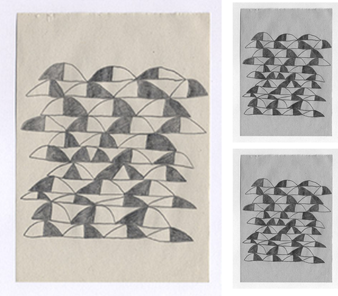
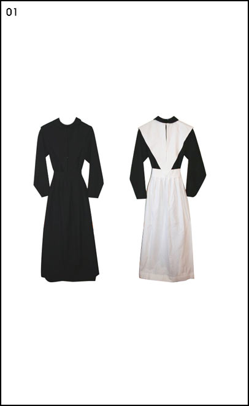
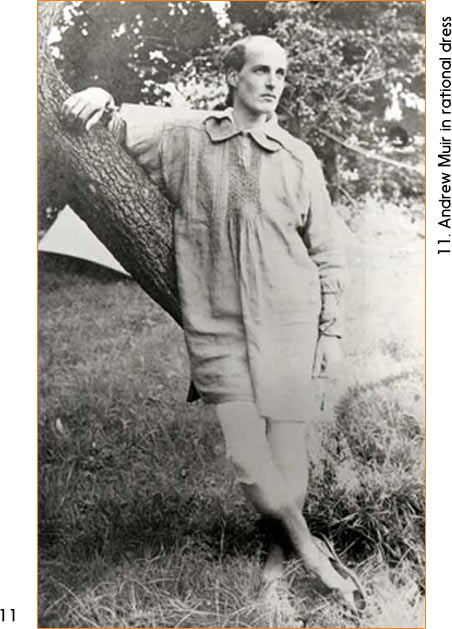

Utopia:
past
This is a prototype
of a time machine
click on the dates to travel
‘Never has been a
Richard Martin
utopian wish or
realisation without a serious
consideration of clothes’
The long literary tradition of the utopian genre, in which authors fantasize about better societies or utopias (from Greek u or ou, no, not; topos, place) found its realization in a the political trend of utopianism or social dreaming. Various schools of utopianists, be it early socialists of the 19th century or the first adepts of cybernetic utopia of the 1950-s, dreamt differently and sometimes even oppositionally. However, every utopian dream shares certain common elements, including well articulated dress codes represented by utopian dress that support and reaffirm the values promoted by utopian ideologists.
1551

Before becoming real utopian dress existed on the pages of the early fictional utopias, such as Thomas Moore’s Utopia, in which the inhabitants wore clothes that were uncoloured and cut to the same pattern.
1800
01. Owenite women from New Harmony settlement, Indiana, US.
02. Black Quaker dress with black pointed cape and apron. Black Quaker dress with white linen cape and apron
03. Quaker fashion blogger Jane.
The Victorian dress reform, whose main aim was to liberate people from the uncomfortable, unhygienic clothes of old times developed throughout the 19th century.
An interest in the dress reform started to emerge under the influence of a number of progressive communitarian settlements and religious communities in the US and the UK. They spared women from the necessity of wearing stiff corsets in favor of plain, simplified dresses, shorter skirts, and even trousers.
1830-s
French socialists devised a gender neutral uniform to fight against status and gender stereotypes imposed by a class-based society. The uniform was buttoned all the way to the back, so one could not get out of it without help from another person – this way socialists showed the interdependence of community members.
1851
05. Katy Johnson, c. 1864-65
06. Dr. Mary Walker, medical doctor, c. 1865
07. Today’s Bloomer’s girl Stacey
American feminist Amelia Bloomer and her fellow feminists fought against the rigid rules of 19th century fashion by wearing wide tunics with Turkish style trousers. Later this combination came to be known as Bloomer’s costume and became an important part of the history of Victorian dress reforms.
1860-s
Members of the Pre-Raphaelite brotherhood objected to the highly structured and heavily trimmed silhouettes so common for Victorian fashion. They wanted to see the beauty of a body and its natural curves. The wives and lovers of pre-raphaelite painters started to wear soft-silhouetted dresses, romanticizing medieval aesthetics. This bohemian, anti-fashion style became known as ‘artistic dress’ and was quite popular for a decade in artistic circles.
1881
The Rational Dress Society protests against the introduction of any fashion in dress that either deforms the figure, impedes the movements of the body, or in any way tends to injure the health. It protests against the wearing of tightly-fitting corsets; of high-heeled shoes; of heavily-weighted skirts, as rendering healthy exercise almost impossible; and of all tie down cloaks or other garments impeding on the movements of the arms. It protests against crinolines or crinolettes of any kind as ugly and deforming…[It] requires all to be dressed healthily, comfortably, and beautifully, to seek what conduces to birth, comfort and beauty in our dress as a duty to ourselves and each other.
1890-s
By the end of the 19th century reform dress was no longer only a symbol of the fight against old-fashioned uncomfortable clothes. The socialist gown demonstrated your political position, your tastes and preferences, it was a part of your social identity.
1910-20’s
12. Russian constructivist Aleksandr Rodchenko dressed in his prozodezhda (worker’s suit), 1922
13 /15. Part of futuristic manifesto and Futuristic suit draft by Italian futurist Giacomo Balla (1914,1918)
14. Sportswear designs by Russian constructivist Varvara Stepanova
Avant garde artists of early 20th century were developing impressive techno utopian imagery, a part of which was a new type of dress that could help merge the human body with machines to achieve a perfect human. Fashion was seen as one of the vehicles in the quest for egalitarianism and socialism. Thus, the initial political impulse of socialists met radical technological fantasies of the industrial era to shape a new branch of utopian dress that would later evolve into what is known today as wearable technology.
1930
16. Olympia by Leni Riefenstahl, 1938.
Dress reformer and psychoanalyst J.C.Flugel published his work The psychology of clothes where he argued that clothes should serve to express democratic values. Flugel rejected futile pursuits of the latest trends. Instead he proposed a vision of a collectivist utopia where people would rather go naked and enjoy the natural beauty of their bodies. The ideas of Flugel should not seem too bizarre, as the time when he was creating his seminal works was marked by a significant interest in eugenics and amusement with a body as the object of scientific development.
1930’s
17. A still from Metropolis, 1927.
18. A still from Transcendent Man, 2011
Some authors even went further to create literary utopias where people would not need any clothes at all. If in Flugel’s opinion inhabitants of a happy and just society could go around naked, H. G. Wells and Gerald Heard imagined worlds where people eventually would have no body, thus fashion would become useless. Authors of scientific utopias of the 1930’s were precursors to the ideologists of transhumanism in the late 20 century, who also postulate a human body as an object of perpetual improvement in the quest of perfection that can be achieved with the help of plastic surgery or digital gadgets that blur the boundaries between human and machine.
1950’s
19. Women training at Mishmar HaEmek kibbutz, 1947
20. Kibbutz in Tel Aviv, n.d.
The Kibbutz movement in Israel promoted the ideas of communism and Zionism. It began as utopian communitarian settlements in the early 20th century and continues to function to this day. The phenomenon of utopian dress found one of its most vivid realizations in the practices of the Kibbutzim communities of the1950’s in which members wore gender neutral, anti-fashion uniforms that were communally owned.
1960’s -2000’s
21/26/28. Pierre Cardin collections 1968, 1969, 1970
22. Prada Sports Spring/Summer 2001 campaign. Photographed by Phil Poynter
23. Prada SS 1997 show
24. Hussein Chalayan S/S 1998 show
25. Yohji Yamamoto S/S 1996 show.
27. Paco Rabanne dress, 1965.
29. Hussein Chalayan S/S 1999 show.
30. Hussein Chalayan A/W 2000 show.
31. Calvin Klein SS 1994 show.
32. C.P. Company inflatable parka, 2001.
After the 1950’s utopian dress gradually started to lose its actual political functions. Nevertheless, the fashion industry instantly appropriated both the techno utopian and communitarian aesthetics of utopian dress to reproduce them both as high fashion ‘utility chic’ minimalist clothing, and as wearable technology items produced by marginal fashion companies as well as by techno giants such as Phillips.
1998
33/34/35. Lucy Orta Refuge Wear Intervention, 1998
36. Lucy Orta Nexus Architecture Intervention, 1998
The works of Lucy Orta exist on the cross section of contemporary art and fashion. They can be perceived as political statements that remind us how aggressive city environments can be. Dress can serve as a protection shield against the aggressive nature of urban environments. They also demonstrate human interdependence and the necessity to care about the person next to oneself. Thus, Orta’s works bring us back to the initial ideas of the early socialists who also saw dress as a tool of human interaction.
2010-2014
While the phenomenon of utopian dress has been almost completely forgotten, a number of emerging designers actively work with the aesthetics of utilitarian and gender neutral dress, Thus reinventing the idea of rational dress, devoid of any excessive decoration. The key conceptual element of this type of clothing are austerity and neutrality is juxtaposed to flashy colours and an abundance of logos and patterns so common to the visual culture of digital era. These gender neutral designs also correspond to popular ideas within post-humanism that promote the image of a human being with a fluid identity and blurred gender/age/status markers.